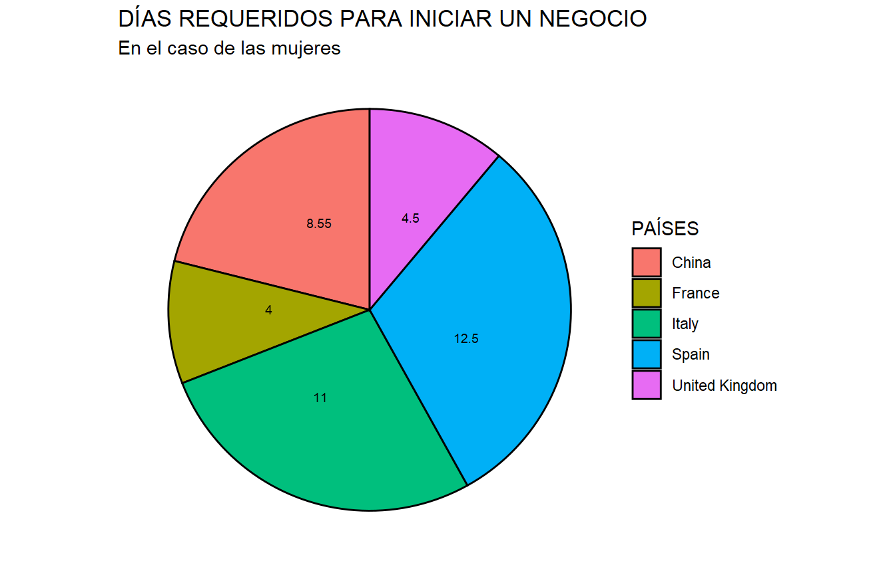

EL PAPEL DE LA MUJER EN LA ESCUELA Y EL TRABAJO
body { background-color:red; }
1. INTRODUCCIÓN
Motivación
Para la asignatura de “Programación y manejo de datos en la era del Big Data” debíamos realizar un trabajo grupal mostrando nuestras habilidades adquiridas con R Studio a lo largo del curso.
La elección del tema era completamente libre, por lo que nosotras decidimos centrarnos en las mujeres, en su papel en la vida tanto estudiantil como laboral y cómo ésta ha evolucionado a lo largo de los años. También podréis observar una comparación, además de entre los diferentes períodos seleccionados, entre diferentes países. En nuestro caso hemos querido dar importancia a Italia, Francia, China, Gran Bretaña y, como no, España, cuyos países veíamos más cercanos e interesantes en cuanto a datos.
Elegimos este sector ya que consideramos que realmente no se tiene en cuenta el verdadero papel de la mujer en nuestra sociedad por lo que, en nuestro trabajo, hemos querido destacar su importancia así como las diferencias respecto al género masculino.
Recientemente, se escucha mucho la palabra igualdad, e incluso nos atrevemos a decir que se habla de mayores derechos de cara a las mujeres respecto a los hombres. Por tanto, hacemos este trabajo para visibilizar lo lejos que se encuentra nuestra sociedad de esta famosa “igualdad”, aunque enfatizando que se ha avanzado mucho sobre períodos anteriores.
Datos
En nuestro caso, la búsqueda de los datos ha sido bastante turbulenta. Hemos utilizado datos principalmente del Banco Mundial, ya que contaba con un gran número de estos.
Aún así, nos ha resultado muy difícil ya que la mayoría de indicadores no tenían datos de España o de otros países que eran de nuestro interés. Por otra parte, cuando sí había datos de España lo más probable es que no tuviésemos suficientes períodos, por lo que la extracción de unos buenos datos ha sido compleja.
De todas formas, cuando encontrábamos datos interesantes con la información que necesitábamos su manejo era fácil ya que no hemos tenido que transformarlos para su posterior análisis.
Por otra parte, también hemos extraído algunos datos del INE, los cuales hemos tenido que transformar para poder trabajar con ellos.
Pasamos a mostrar nuestro trabajo.
2. EN LA EDUCACIÓN
En los siguientes gráficos vamos a mostrar la evolución del IPG (Índice de Paridad de Género) en los distintos períodos. La paridad de género se refiere a la igualdad entre hombres y mujeres en términos de acceso a oportunidades, recursos y recompensas. El índice de paridad de género (IPG) es una medida utilizada para evaluar el grado en que se alcanza la igualdad de género en una sociedad en particular.
Para analizar el IPG, se pueden considerar diferentes aspectos, como la participación de las mujeres en el mercado laboral, su representación en puestos de liderazgo y su acceso a la educación y la salud. También es necesario valorar la existencia de brechas salariales entre hombres y mujeres y la prevalencia de la violencia de género.
Es importante tener en cuenta que el IPG es solo una medida y que no refleja plenamente la realidad de la igualdad de género en una sociedad. Es necesario complementarlo con otras herramientas de análisis y considerar otros factores que pueden afectar la igualdad de género, como la desigualdad de género en el acceso a la justicia y la discriminación sistémica.
En su forma más simple, es calculado como el cociente del número de mujeres por el número de varones en una etapa determinada de educación (primaria, secundaria etc.). Por lo tanto, si el resultado es mayor a 1, significa que las mujeres tienen una mayor representación en el sector estudiado.
En nuestro caso, nos hemos centrado en el sector educativo. En los gráficos siguientes se puede observar cómo ha evolucionado este índice en los distintos períodos y en función de los distintos niveles de escolarización.
2.1. ESCOLARIZACIÓN PRIMARIA
En el caso de la escolarización primaria podemos observar como hay una mayor representación de las mujeres solo en el caso de Gran Bretanya, para los primeros 5 años. En los años posteriores a este período, solamente en el caso de China y España, hay una mayor representación del sexo femenino a partir del año 2012.
Código
gender <- wbsearch(pattern = "gender", field = "indicator")
escolarizacion <- wb(indicator = c("SE.ENR.PRIM.FM.ZS", "SE.ENR.SECO.FM.ZS", "SE.ENR.TERT.FM.ZS"))
escol1 <- escolarizacion %>% filter(country == "Spain"|
country == "France"|
country == "Italy"|
country == "United Kingdom"|
country == "China") %>% filter(date >= 2000)
#gráfico IPG primaria
prim <- escol1 %>% filter (indicatorID == "SE.ENR.PRIM.FM.ZS")
primgg <- ggplot(prim, aes(x = date, y = value, color =country)) + geom_point() + geom_line(aes(group = country)) + labs(title = "ÍNDICE DE PARIDAD DE GÉNERO", subtitle = "ESCOLARIZACIÓN PRIMARIA") + scale_x_discrete(breaks = c("1990","1995", "2000", "2005", "2010", "2015"))
primgg <- ggplotly(primgg)2.2. ESCOLARIZACIÓN SECUNDARIA
En el caso del nivel de educación secundario, en la mayoría de países, hay un mayor nivel de escolarización de mujeres que de hombres. Son China e Italia los únicos que no llegan a la unidad en los distintos períodos; China solo lo consigue del 2007 al 2009 e Italia en el 2016.
Código
#gráfico IPG secundaria
sec <- escol1 %>% filter (indicatorID == "SE.ENR.SECO.FM.ZS")
secgg <- ggplot(sec, aes(x = date, y = value, color =country)) + geom_point() + geom_line(aes(group = country)) + labs(title = "ÍNDICE DE PARIDAD DE GÉNERO", subtitle = "ESCOLARIZACIÓN SECUNDARIA") + scale_x_discrete(breaks = c("1990","1995", "2000", "2005", "2010", "2015"))
secgg <- ggplotly(secgg)2.3. ESCOLARIZACIÓN TERCIARIA
Por último, en el caso de la escolarización terciaria las cifras son mucho más destacables. Ahora son las mujeres las que predominan en este nivel de estudios para todos los años. El único país que no consigue tener una mayor representación femenina es China, ya que no llega a estos niveles hasta mediados del 2007.
Código
#gráfico IPG terciaria
terc <- escol1 %>% filter (indicatorID == "SE.ENR.TERT.FM.ZS")
tercgg <- ggplot(terc, aes(x = date, y = value, color = country)) + geom_point() + geom_line(aes(group = country)) + labs(title = "ÍNDICE DE PARIDAD DE GÉNERO", subtitle = "ESCOLARIZACIÓN TERCIARIA") + scale_x_discrete(breaks = c("1990","1995", "2000", "2005", "2010", "2015"))
tercgg <- ggplotly(tercgg)2.4. ESCOLARIZACIONES JUNTAS, POR PAÍSES
Para finalizar con el sector educativo, hemos querido plasmar en un mismo gráfico (para cada país) los tres niveles de escolarización juntos, para una mayor perspectiva de los datos
Código
escol_nivel <- wb(country = c( "ESP", "FRA", "GBR", "ITA"),
indicator =c("SE.ENR.PRIM.FM.ZS", "SE.ENR.SECO.FM.ZS", "SE.ENR.TERT.FM.ZS"),
startdate = 2000, enddate = 2016, POSIXct = TRUE)
por_paises <- ggplot(escol_nivel, aes(x = date_ct ,y = value, color = indicatorID, group = indicatorID)) + geom_point() + geom_line() + theme(panel.background = element_rect(fill = "gray28",
colour = "white"), plot.background = element_rect(fill = "aliceblue",
colour = "bisque")) +labs(title = "ÍNDICE DE PARIDAD DE GÉNERO SEGÚN EL NIVEL DE ESTUDIOS", "Fecha", y = "valor", colour = "Nivel de Estudios") + theme(panel.background = element_rect(fill = "antiquewhite")) +
facet_wrap(~country) + scale_color_discrete(name = "indicatorID", labels = c("primaria", "secundaria" , "terciaria"))
por_paises <- ggplotly(por_paises)
3. EN EL TRABAJO
3.1. EN CUANTO A LA EMPRESA
3.1.1.PROPORCIÓN DE MUJERES EMPRESARIAS
En el siguiente gráfico podemos observar la proporción de mujeres empresarias por continentes. El color más amarillo nos indica un alto porcentaje de empresarias, y el color morado más oscuro nos indica de una baja proporción de mujeres empresarias en el continente.
En América hay un alto porcentaje de empresarias destacando un alto valor en Brasil y Paraguay y un bajo valor en Venezuela. Asia destaca por un bajo porcentaje de mujeres empresarias en general. En Oceanía hay un alto porcentaje de mujeres destacando Australia. En Europa encontramos un alto porcentaje de mujeres empresarias también destacando España, Portugal e Italia.
En África en general hay un bajo nivel de empresarias, aunque es importante recalcar el alto porcentaje de mujeres empresarias en Egipto, Ghana y Uganda.
En el otro gráfico se utilizan los mismos datos pero en diferente formato, en este podemos observar en qué países hay mayor porcentaje de mujeres empresarias según sea más grande o más pequeño el nombre del país.
Gráfico 1
Código
mujeres <- wbsearch(pattern = "employment", field = "indicator")
porcentaje <- wb(indicator = c("SL.EMP.MPYR.FE.ZS"))
mujempresarias <- porcentaje %>%
select(date, value, country, iso3c) %>%
mutate(date = as.numeric(date)) %>%
filter(date == 2019) %>%
mutate(proporción = ntile
(value, 4))
world <- ne_countries(scale = "medium", returnclass = "sf")
world <- world %>% filter(subregion != "Antarctica") %>% filter(admin != "Greenland")
aa <- ggplot() + geom_sf(data = world) + theme_void()
world <- world %>% select(name, iso_a3, geometry)
mujempresarias2 <- left_join(mujempresarias, world, by = c("iso3c" = "iso_a3"))
mujempresariasgg <- mujempresarias2 %>%
ggplot + geom_sf (data = mujempresarias2, aes(geometry = geometry , fill = proporción)) + scale_fill_viridis_c(option = "plasma") + labs(title = "MUJERES TRABAJADORAS QUE SON EMPRESARIAS", subtitle = "(amarillo mayor proporción, morado menor)")
mujempresariasggOtra forma de visualizar los datos
3.1.2.TRABAJADORES POR CUENTA PROPIA
Los trabajadores por cuenta propia son todas aquellas personas que realizan una actividad económica de forma independiente y directa, sin estar sujetos a un contrato de trabajo, aunque estos utilicen el servicio remunerado de otras personas para llevar a cabo su actividad (empleador).
Como se puede observar el valor de los hombres es más elevado en los cuatro países de los que hemos extraído datos para realizar su análisis. No se observa que los niveles hayan aumentado en ninguno de los países.
Código
cuentapropia <- wb(indicator = c("SL.EMP.OWAC.FE.ZS", "SL.EMP.OWAC.MA.ZS"), country = c( "ESP", "FRA", "GBR", "ITA"))
cuentapropiagg <- ggplot(cuentapropia, aes(x = date , y = value, color = indicatorID, group = indicatorID)) + geom_point() + geom_line() + theme(panel.background = element_rect(fill = "gray28",
colour = "white"), plot.background = element_rect(fill = "aliceblue",
colour = "bisque")) +labs(title = "TRABAJADORES POR CUENTA PROPIA", subtitle = "en miles", "Fecha", y = "valor") + theme(panel.background = element_rect(fill = "antiquewhite")) +
facet_wrap(~country) +
scale_color_discrete(name = "cantidad", labels = c("mujeres", "hombres")) +
scale_x_discrete(limits = c("1991","1995", "2000", "2005", "2010", "2015"))
cuentapropiagg3.1.3.INICIAR UN NEGOCIO
El tiempo requerido para iniciar un negocio de las mujeres por días es mayor en España, seguido de Italia. En tercer lugar, en China se requiere una media de 8 días para iniciar un negocio. Por último, Francia y Gran Bretaña con el menor número de días, toma aproximadamente un valor de 4 días como media para poder iniciar un negocio en estos países. También podemos observar los mismos datos en un gráfico circular.
Gráfico 1
Código
iniciarnegocio <- wb(indicator = c("IC.REG.DURS.FE"))
iniciarnegocio0 <- iniciarnegocio %>% filter(country == "Spain"|
country == "France"|
country == "Italy"|
country == "United Kingdom"|
country == "China") %>% filter(date == 2019)
inicionegocio <- ggplot() +
geom_col(data = iniciarnegocio0, aes(x = reorder(indicatorID, value), y = value, fill = country), position = "dodge") +
scale_fill_brewer(palette = "Greens") +
theme(axis.text.x = element_text(colour = "black"),
panel.background = element_rect(fill = "white"),
plot.background = element_rect(fill = "white")) +
labs(title = "Tiempo requerido para iniciar un negocio", x = NULL, y = NULL, caption = "Fuente: Elaboración propia con datos del Banco Mundial") +
labs(y = "número de días") +
labs(x = "mujeres") +
theme(legend.position = "bottom", legend.direction = "horizontal")
inicionegocioOtra forma de visualizar los datos
Código
graficodif <- ggplot(iniciarnegocio0, aes(x="", y = value, fill=country)) + geom_bar(stat ="identity", color = "black") +
geom_text(aes(label = value), position = position_stack(vjust=0.6), color="black", size = 2.5, ) +
coord_polar(theta = "y") +
theme_void() +
labs(title = "DÍAS REQUERIDOS PARA INICIAR UN NEGOCIO",subtitle = "En el caso de las mujeres")
graficodif + theme(panel.grid.major = element_line(linetype = "blank")) +labs(fill = "PAÍSES")
3.2. EN CUANTO A LA REMUNERACIÓN
3.2.1. PORCENTAJE DE SALARIO DE MUJERES RESPECTO EL DE LOS HOMBRES
(por sectores)
En este gráfico podemos observar como el salario de las mujeres respecto el de los hombres siempre es inferior, ya que pocas veces se sitúa en un 80% respecto de el de los hombres.
En este caso hemos analizado la diferencia salarial por sectores, privado y público. Como podemos comprobar el salario del sector privado para las mujeres siempre es inferior al del sector público, ya que el mayor punto lo encontramos en un 72% (respecto el de los hombres) el cual no llega ni al nivel inferior del sector público, que se sitúa en un 75%.
Código
gdp1 <- wbsearch(pattern = "wage", field = "indicator")
porcSALARIO <- wb(indicator = c("BI.WAG.PRVS.FM.SM", "BI.WAG.PUBS.FM.SM"))
porcSALARIO1 <- porcSALARIO %>% filter(country == "Spain")
porcSALARIOgg <- ggplot(porcSALARIO1, aes(x = date, y = value, color = indicatorID)) +
geom_point() + geom_line(aes(group = indicatorID)) + labs(title = "SALARIO DE LAS MUJERES RESPECTO EL DE LOS HOMBRES, POR SECTORES", subtitle = "en porcentajes") +
scale_color_discrete(name = "indicatorID", labels = c("sector privado", "sector público"))
porcSALARIOgg <- ggplotly(porcSALARIOgg)3.2.2. DIFERENCIA DE SALARIOS
Ahora, por países (los mismos que antes), vamos a calcular la diferencia (en euros) entre los salarios de hombres y mujeres, actualizado a tiempos actuales, sin centrarnos en ningún sector en concreto, tal como lo ha hecho el profesor en clase.
Por una parte, la mayor diferencia salarial la encontramos en Gran Bretaña, seguido de España, quien no se aleja apenas ya que no le supera ni en un 1%.
Por otra parte, hay una menor diferencia en Francia e Italia quien cercanos tienen una diferencia salarial del 21%, casi 10 puntos porcentuales menos que los países anteriormente comentados.
Tabla
Código
my_url <- "https://raw.githubusercontent.com/perezp44/iris_data/master/data/PIAAC_data_small.csv"
df_original <- read_csv(my_url)
salarios <- df_original %>% select(Country, Gender, Education, Wage_month, Wage_hour, Numeracy_score)
tablasalarios <- salarios %>%
group_by(Country, Gender) %>%
summarise(W_mes_medio = mean(Wage_month, na.rm = TRUE)) %>%
ungroup() %>%
pivot_wider(names_from = Gender, values_from = W_mes_medio) %>%
mutate(dif_W = Male-Female, dif_percent_W = dif_W/Female)
tablasalarios$dif_percent_W <- round(tablasalarios$dif_percent_W, digits=3)
banderas <- c("https://www.comprarbanderas.es/images/banderas/400/60-espana-sin-escudo_400px.jpg",
"https://upload.wikimedia.org/wikipedia/commons/c/c3/Flag_of_France.svg",
"https://www.banderas-mundo.es/data/flags/w1600/gb.png" , "https://media.istockphoto.com/id/1063640060/es/vector/vector-bandera-de-italia.jpg?s=612x612&w=0&k=20&c=gZUTN3jEmTjiqIJWbW6oOZjcH55MzsjsLMBs74-R1Lo=")
tablasalarios1 <- cbind(tablasalarios, banderas)
tablasalarios1 <- tablasalarios1 %>% gt()
tablasalarios1 %>% gt::text_transform(locations = cells_body(columns = c(banderas)), fn = function(x){gt::web_image(x, height = 25)})| Country | Female | Male | dif_W | dif_percent_W | banderas |
|---|---|---|---|---|---|
| ESP | 1245.076 | 1617.810 | 372.7344 | 0.299 |  |
| FRA | 1802.254 | 2188.032 | 385.7784 | 0.214 |  |
| GBR | 1377.953 | 1794.817 | 416.8640 | 0.303 |  |
| ITA | 1629.828 | 1976.826 | 346.9983 | 0.213 |  |
Otra forma de visualizar los datos
Código
graficodif <- ggplot(tablasalarios, aes(x="", y = dif_percent_W, fill=Country)) + geom_bar(stat ="identity", color = "black") +
geom_text(aes(label = dif_percent_W), position = position_stack(vjust=0.6), color="black", size = 2.5, ) +
coord_polar(theta = "y") +
theme_void() +
labs(title = "% DIFERENCIA DE SALARIOS")
graficodif + theme(panel.grid.major = element_line(linetype = "blank")) +labs(fill = "PAÍSES") 3.2.3. TRABAJO DOMÉSTICO, NO REMUNERADO
Por último, hemos incluido en este apartado la proporción de tiempo dedicado al trabajo doméstico y de cuidados no remunerado (h/dia) de hombres y mujeres. Ya que estábamos analizando diferencias salariales, nos ha parecido curioso incluir diferencias domésticas.
Hemos cogido datos de 2003 y 2010 para poder ver la diferencia (también porque no hemos encontrado muchos más) y, como podemos observar, aunque el hombre ha incrementado su participación en el trabajo doméstico, la mujer dobla e incluso triplica el número de horas que dedica este al trabajo doméstico no remunerado.
Código
trabajo <- wbsearch(pattern = "work", field = "indicator")
trabajodoméstico <- wb(indicator = c("SG.TIM.UWRK.MA", "SG.TIM.UWRK.FE"))
trabajodoméstico1 <- trabajodoméstico %>% filter(country == "Spain") %>% filter(date >= 2000)
trabdom <- ggplot(trabajodoméstico1, aes(date, value, fill = indicatorID)) +
geom_col() +
theme_minimal() +
theme(
panel.grid = element_blank(),
panel.ontop = TRUE) + labs(title = "Proporción de horas dedicadas al trabajo doméstico", subtitle = "h al dia") +
scale_fill_discrete(name = "HORAS DIARIAS", labels = c("mujeres", "hombres"))
trabdom3.3. TASAS EN EL MERCADO LABORAL
3.3.1. TASA DE ACTIVIDAD
A continuación, vamos a mostrar una proyección futura para la tasa de actividad, en concreto para rangos de edad de la población juvenil actual.
Primeramente, en cuanto a la población de entre 25 y 29 años vemos como la tasa de actividad de hombres se reducirá notablemente al contrario de lo que ocurrirá en la de las mujeres, que se verá incrementada. Desde el 2015 hasta el 2022 esta tasa trabajaba de diferente forma, eran los hombres los que contaban con una mayor tasa de actividad, pero la previsión futura nos dice que en unos años pasará justo lo contrario, serán las mujeres las que contarán con mayores niveles.
En segundo lugar, si nos centramos en la tasa para jóvenes de entre 30 y 34 años vemos como para el 2025 habrá una convergencia de ambos sexos. La tasa en hombres se reducirá y la de mujeres se verá incrementada, pero sin llegar a alcanzar a los hombres en ningún momento.
25-29 AÑOS
30-34 AÑOS
Código
df_act2 <- df_orig %>%
filter(periodo >= 2015) %>%
filter(sexo == "Mujeres"|
sexo == "Varones") %>%
filter(grupos_de_edad == "entre los 30 y 34 años")
actjoven2 <- ggplot(df_act2, aes(x = periodo, y = total, color = sexo)) + geom_point() + geom_line(aes(group = sexo)) + labs(title = "Tasa de actividad", subtitle = "de hombres y mujeres de entre los 30 y 34 años") + scale_y_discrete(breaks = c(90.31, 92.13, 93.82, 93.87, 94.04))
actjoven2 <- ggplotly(actjoven2)3.3.2. TASA DE PARO
Por último, en este apartado vamos a mostrar la tasa de paro de hombres y mujeres para distintos períodos.
En el primer período, 2010, la tasa de paro de mujeres se situaba poco por encima de la de hombres, solo en un 1% más.
En cambio, en el 2015, la brecha se incrementa, contando con un paro para las mujeres un 3% superior.
En cuanto al 2020, esta brecha se reduce pero no en gran medida. En este caso la diferencia entre el paro de hombres y mujeres es casi de un 4%, superior para estas.
Por último, en la última pestaña, hemos incluido una tabla para visualizar los gráficos de forma diferente.
Como conclusión podríamos añadir que siempre son las mujeres las que cuentan con datos más desfavorables, para todos los períodos.
2010
2015
2020
4. CONCLUSIÓN
En conclusión, podríamos añadir que, como hemos observado, tanto en el sector educativo como laboral hay una gran cantidad de brechas en cuanto a género.
Las brechas de género son el resultado de la discriminación de género, la cual puede ser sistemática o inconsciente, y puede estar basada en estereotipos y roles de género.
Además, las brechas de género tienen un impacto negativo en el bienestar y el desarrollo de las mujeres, y también pueden afectar negativamente a los hombres.
Por lo tanto, es necesario tomar medidas para reducirlas y eliminarlas, incluyendo la promoción de la igualdad de género y la eliminación de la discriminación de género en todos los ámbitos de la vida.
Y también, es importante involucrar a ambos géneros en la solución de los problemas de brechas de género y promover la igualdad de género en todos los ámbitos de la vida, incluyendo el trabajo, la educación y la política.